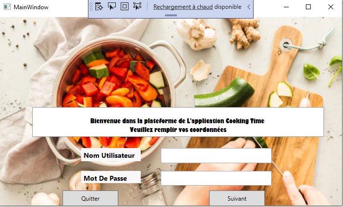
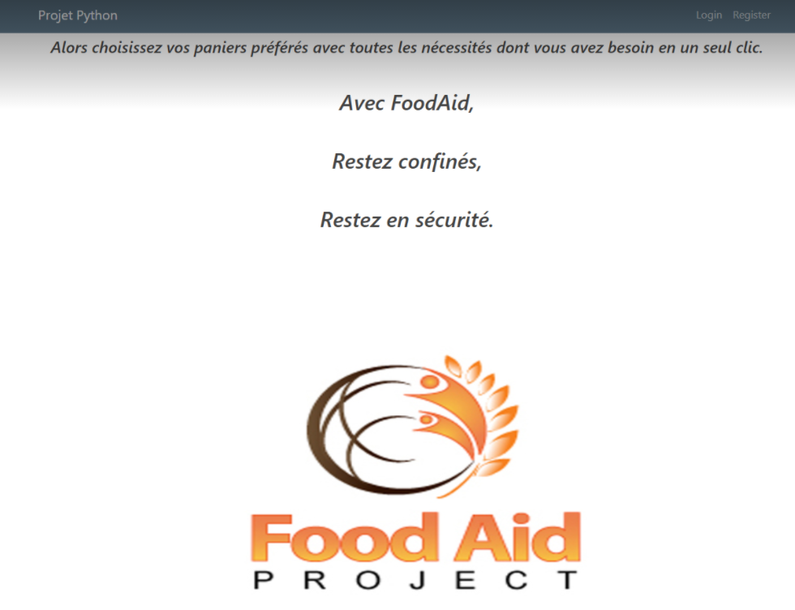

I will walk you through some of my projects that i have created these past 2 years
- This project was made by my friend and I
last year for the module of BDD(Base de Données
et interopérabilité), it was a very fun and interesting project
since we had to apply the knowledge acquired from the
course and we had a certain margin of creativity
design-wise, the language we used is C#
and we also dealed with MySQL
to handle the data correctly, as for the interface we used
WPF which is a .NET based UI. - This project was done last year in the python module,
where we were asked to run an app that will help with the
management of ressources in the lockdown,
as you might notice this was done in the early era of covid. So the goal here was to help
households order necessities or packges already filled with basic needs
based on the type for example a vegetable package will contain specific veggies
but if the user isn't satisfied with the ingredient
they can personalize it according to their preference.
We used python for this project and applied the
geopanda package and also the django module to visualize it - Out of all the projects this was my favorite, why ? You might ask. Well, it was a project that we were assigned to during the elective week this year,
in the module of data visualization and art, we were asked to make a visualization based on actual data but we should make it the most creative and artsy as possible. We have chosen to visualize Trump's tweets
and to represent the words he most frequently uses that are a bit subjective and explicit all while presenting them in his trum tower. This project had instantly the approval of the teacher since it was creative and quite humorous.
CookingTime app

Food Aid app

Data visualization Project